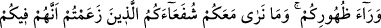

indirdiği sırların ve hakîkatlerin benzeri ile konuştuklarını iddia eden kimselerin sözü
ile övünen ve bu konuda sözü uzatanlar; işte bunların hepsi zâlimlerdendirler. Onların
bu zulümlerinin zararı, ruhlarının bedenden ve nefisleri kalıptan zorla sökülüp
çıkarıldığı zaman görülür. Çünkü nefisleri dünyâ lezzet ve şehvetlerine bağlı, uhrevî
arzulardan ve gaybî hakîkatlerin lezzetinden mahrumdur. Bu yüzden melekler ruhlarını
kabzetmek için ellerini onlara katı ve kahredici bir biçimde uzatırlar. Bu şiddet, onların
yalan ve iftiraları ile, halk nazarında üstün görünmekten ve çeşitli yaratıklar üzerinde
riyâset talepleri ile mütenâsip olacaktır. Onların canları alınırken karşılaşacakları
şiddet ve horlanma, bu hallerine uygun olacaktır.
Nitekim Allah Teâlâ: “Allah’a gerçek olmayanı söylemenizden O’nun âyetlerine
karşı büyüklük taslamanızdan ötürü bugün alçaklık azabıyle cezalandırılacaksınız.”
buyurmaktadır. Yani, O’nun nefsinize yerleştirdiği âyetlerine karşı büyüklük
taslamanızdan, onlardan yüz çevirmenizden ve sizde olmayan vasıflarla varmışcasına
riyâkârlık etmenizden ötürü alçaklık azabıyla cezalandırılacaksınız.
Nefsin beden ile alâkası belki bir, iki ya da üç günde kesilir. Mahlûkâtın vasıflarından
ayrılması ise yıllarca ve hattâ haşre kadar sürebilir. Kâfirlerin ruhları ise ebediyyen bu
suretle kalır. Yani onlara sürekli, şiddetli acılarla can vermenin ızdırabı tattırılır. İşte
elem verici, şiddetli azab da budur. Kabir azabı da böyle bir cezalardırmanın
neticesidir. İyi anla.
Hikâye edilir ki, âsilerden biri ölmüş. Kabrini kazdıkları vakit orada büyük bir yılan
olduğunu görmüşler. Başka bir kabir açtıklarında yine yılanla karşılaşmışlar. Bu minval
üzere devam ederek otuz kabir açmışlar. Hepsinde de bir büyük yılanın ölüyü
beklediğini görmüşler. Sonunda anlamışlar ki, hiç kimse Allah’tan kaçamaz ve ona galip
gelmez. Asiyi öylece yılanın yanına defnetmişler. Bilmişler ki bu yılan onun amelidir.
Hâfız şöyle der:
Bir şeyler yapalım, yoksa mahcûb oluruz
Can yükünü diğer dünyaya götürdüğümüz gün
94. Andolsun ki, sizi ilk defa yarattığımız gibi teker teker bize geleceksiniz ve
(dünyada) size verdiğimiz şeyleri arkanızda bırakacaksınız. Yaratılışınızda